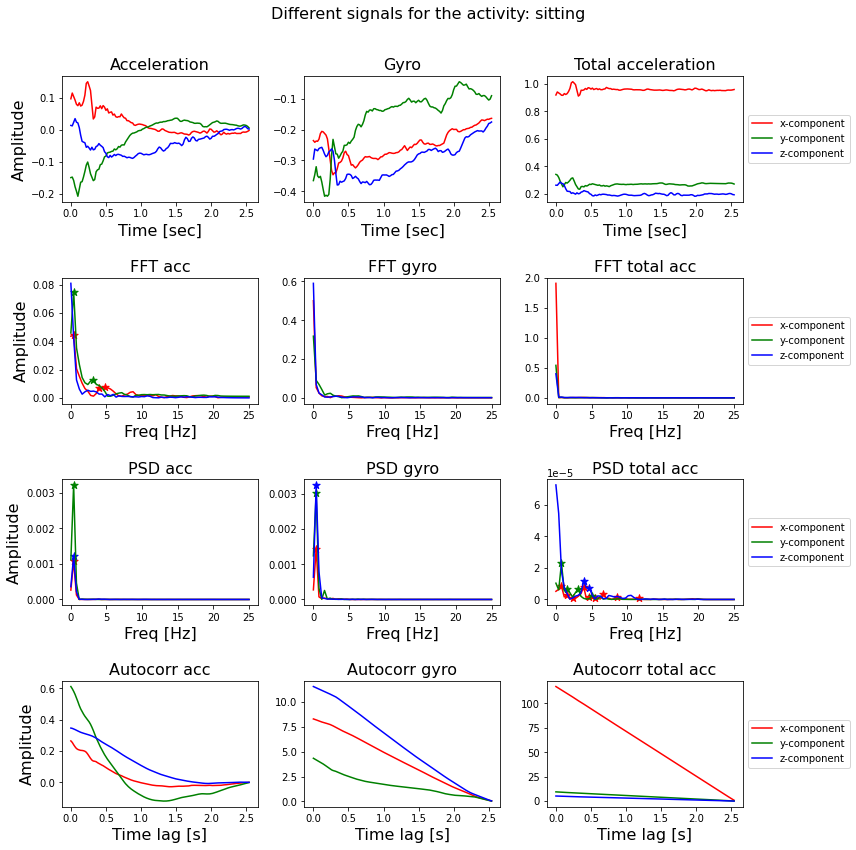
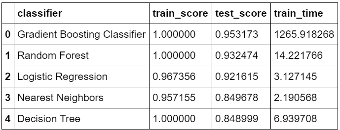
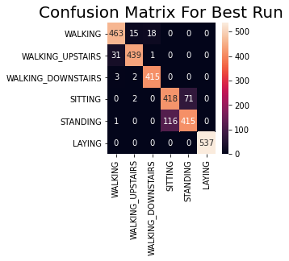

Machine Learning for Stochastic Signal Analysis
In this blog post, I am trying to learn how stochastic signal analysis techniques can be used in combination with machine learning classifiers for accurate classification and modelling of time series and signals.
Introduction
Signals can come in many different forms and shapes for example audio signals, pictures, video signals, geophysical signals (seismic data), sonar and radar data and medical signals (EEG, ECG, EMG). Signal Processing is usually divided into two parts: the continuous time-domain and the discrete-time domain. The difference is that Continuous signals have an independent variable which is continuous in nature, i.e. it is present at each time-step within its domain. No matter how far you 'zoom in', you will have a value at that time step at t = 0.1 s, at t = 0.1435 s, at t = 0.1435297 s, etc. Discrete-time signals are discrete and are only defined at specific time-steps. For example, if the period of a discrete signal is 0.1 s, it will be defined at t = 0.1 s, t = 0.2 s, t = 0.3 s, etc … (but not at t = 0.143 s).
In this exploration, I am looking at the discrete version of the various stochastic signal analysis techniques.
Techniques to transform between time and ferequency domain
Fast Fourier Transform (FFT)
The mathematical function which transform a signal from the time-domain to the frequency-domain. The Fast Fourier Transform (FFT) is an efficient algorithm for calculating the Discrete Fourier Transform (DFT) and is the de facto standard to calculate a Fourier Transform. The FFT of an input signal of N points, will return an vector of N points. The first half of this vector (N/2 points) contain the useful values of the frequency spectrum from 0 Hz up to the Nyquist frequency of f_s / 2. The second half contains the complex conjugate and can be disregarded since it does not provide any useful information.
Power Spectral Density (PSD)
Similar to the FFT, it describes the frequency spectrum of a signal. But in addition to the FFT it also takes the power distribution at each frequency (bin) into account. Generally speaking the locations of the peaks in the frequency spectrum will be the same as in the FFT-case, but the height and width of the peaks will differ. The surface below the peaks corresponds with the power distribution at that frequency.
Auto-correlation
The auto-correlation function calculates the correlation of a signal with a time-delayed version of itself. The idea behind it is that if a signal contain a pattern which repeats itself after a time-period of d seconds, there will be a high correlation between the signal and a d sec delayed version of the signal.
Wavelet
It transform a signal into its frequency domain, just like the Fourier Transform. The difference is: the Fourier Transform has a very high resolution in the frequency domain, and zero resolution in the time domain; we know at which frequencies the signal oscillates, but not at which time these oscillations occur. The output of a Wavelet transform hash a high resolution in the frequency domain and also in the time domain; it maintains information about the time-domain.
Experminents:
Dataset overview
I want to classify the signals in the Human Activity Recognition Using Smartphones Data Set. This dataset contains measurements done by 30 people between the ages of 19 to 48. The measurements are done with a smartphone placed on the waist while doing one of the following six activities:
- walking
- walking upstairs
- walking downstairs
- sitting
- standing
- laying
The measurements are done at a constant rate of 50 Hz. After filtering out the noise, the signals are cut in fixed-width windows of 2.56 sec with an overlap of 1.28 sec. Each signal will therefore have 50 x 2.56 = 128 samples in total.
The smartphone measures three-axial linear body acceleration, three-axial linear total acceleration and three-axial angular velocity. So per measurement, the total signal consists of nine components.
The dataset is already splitted into a training and a test part.
- training set size (7352, 128, 9)
- test set size (2947, 128, 9)
Feature Extraction
We have seen four different ways to calculate characteristics of signals using the FFT, PSD autocorrelation and wavelet function. These functions transform a signal from the time-domain to the frequency-domain and give us its frequency spectrum.
After transforming a signal to the frequency-domain, I can extract features from each of these transformed signals and use these features as input in standard classifiers like Random Forest, Logistic Regression, Gradient Boosting, Nearest Neighbour or Decision tree.
I calculated the FFT, PSD and the auto-correlation of each signal and use the x and y coordinates of the peaks as input for the classifier. In addtion, I calculated wavelet features separately and used those features for the classifier.

Classification with Traditional Machine Learning Classifier

The accuracy of the training set is about 100% and the accuracy on the test set is about 95%.
The feature selection was done fully automatic; for each transformation I selected the x and y component of the first five peaks (or use the default value of zero).
It is understandable that some of the 270 features will be more informative than other ones. It could be that some transformations of some components do not have five peaks, or that the frequency value of the peaks is more informative than the amplitude value, or that the FFT is always more informative than the auto-correlation.
The accuracy can be increased further if I can actively select the features, transformations and components which are important for classification. Maybe I can even choose a different classifier or play around with its parameter values (hyperparameter optimization) to achieve a higher accuracy.
LSTM
I just want to give a final touch with neural networks (area of my interest) to see how it performs on the Human Activity Recognition Using Smartphones Data Set.
There are two main approaches to neural networks that are appropriate for time series classification and that have been demonstrated to perform well on activity recognition using sensor data from commodity smart phones and fitness tracking devices. They are Convolutional Neural Network Models and Recurrent Neural Network Models.
RNN and LSTM are recommended to recognize short activities that have natural order while CNN is better at inferring long term repetitive activities. The reason is that RNN could make use of the time-order relationship between sensor readings, and CNN is more capable of learning deep features contained in recursive patterns.
I am using LSTM in this blog post. The LSTM learns to map each window of sensor data to an activity, where the observations in the input sequence are read one at a time, where each time step may be comprised of one or more variables.

Outstandingly, the final accuracy is of 91%! And it can peak to values such as 93%, at some moments of luck during the training, depending on how the neural network's weights got initialized at the start of the training, randomly.
The accuracy can be pushed up using a deep LSTM architecture which combines the concepts of bidirectional RNNs, residual connections, and stacked cells.
Code
The complete code used in this post can be found in my GitHub repo.